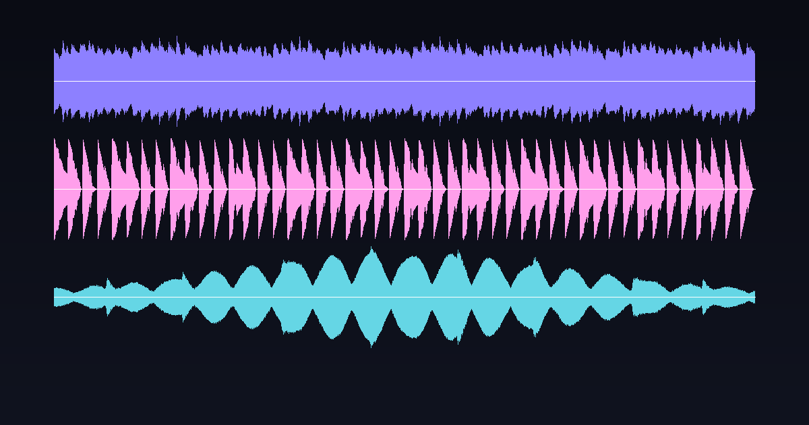
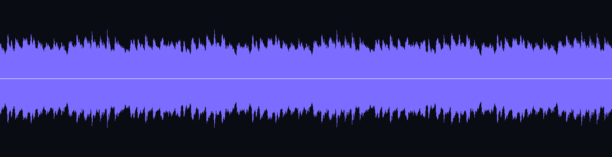
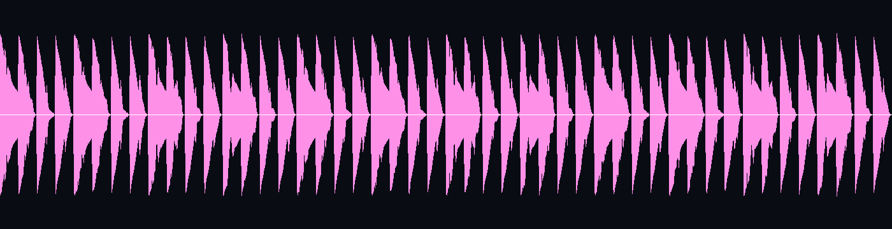

前回、バトルマップを計算だけで自動生成する話を書きました。今回は音の番です。TRPGセッションや配信のBGM・効果音を、サンプリング音源も生成AIも使わずに、波形をゼロから足し合わせて作りました。
やっていることは実はシンプルで、「オシレータ」「エンベロープ」「フィルタ」という3つの部品を組み合わせているだけです。この3つさえあれば、驚くほどいろいろな音が作れます。
すべての音の出発点は、単純な波形をひたすら計算することです。のこぎり波（saw）・矩形波（square）・正弦波（sine）の3種類を主に使います。
def saw(freq, t):
# 時刻tの配列に対して、周波数freqののこぎり波を計算
return 2 * (t * freq - np.floor(t * freq + 0.5))
def sine(freq, t):
return np.sin(2 * np.pi * freq * t)どちらも中身はただの数式です。tに秒数の配列（0.0, 0.0000227, 0.0000454...）を渡すだけで、44.1kHzぶんの波形が一瞬で計算できます。のこぎり波は倍音が多く「戦闘」のドライブ感に、正弦波は倍音がなく「エンディング」の澄んだベルの音に向いています。
オシレータをそのまま鳴らすと、音量が最初から最後まで一定の、いかにも機械的な音になります。そこでADSR（Attack / Decay / Sustain / Release）という音量の時間変化カーブを掛け合わせます。立ち上がりを早くすれば打楽器っぽく、ゆっくりにすればパッドっぽくなる、という具合です。

探索用BGM「bgm_探索_日常」の波形。アルペジオの音符ひとつひとつにエンベロープが掛かり、山が滑らかに連なっています。

戦闘用BGM「bgm_戦闘」の波形。アタックの立ち上がりを鋭くしているため、山の輪郭がギザギザに尖ります。同じ仕組みでここまで印象が変わります。
オシレータの生の波形は倍音が多く、耳に刺さりやすい音になりがちです。一次のローパスフィルタ（高い周波数だけ減衰させる処理）を1つ通すだけで、角が取れて楽器らしい柔らかさが出ます。実装は前のサンプル値を少しだけ引きずる、という単純な移動平均です。
def lp(x, cutoff_ratio):
y = np.zeros_like(x)
y[0] = x[0]
for i in range(1, len(x)):
y[i] = y[i-1] + cutoff_ratio * (x[i] - y[i-1])
return yBGMはセッション中ずっとリピート再生される前提なので、ループの継ぎ目でプツッというクリックノイズが出ると致命的です。対策は単純で、波形の最初と最後の数ミリ秒をフェードイン・フェードアウトさせ、振幅を0から始めて0で終わらせるだけです。今回は4msのクロスフェードを全トラックに適用し、実際に書き出したWAVをffmpegのvolumedetectで確認して、クリッピングが起きていないことも検証しています。
手弾き録音やサンプリング音源だと、著作権・ライセンスの出所を毎回気にする必要があります。数式だけで音を作ると、素材はすべて自分のコードが起点なので権利関係が完全にクリーンです。加えて、パラメータ（テンポ・調・音色）を変えるだけで別バリエーションが量産できるのも、手続き生成ならではの利点だと感じています。
同じ手続き生成の手法で作ったバトルマップの自動生成や、そこで遊べるクトゥルフ神話TRPGのオリジナルシナリオもあわせてどうぞ。